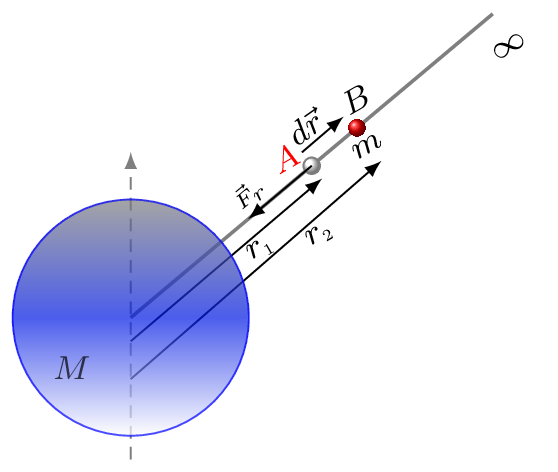

Subsection 6.1.2 Gravitational Potential Energy, U

The gravitational potential energy of a body is work required to bring that body from infinity to the particular position in a gravitational field. Let a body of mass \(m\) is displaced without acceleration by a distance \(\,dr\) against the force of gravity, then work done by the external force \(\vec{F}_{r}\) is given by
\begin{equation*}
\,dw=\vec{F}_{r}\cdot\,d\vec{r} = F_{r}\,dr = G\frac{Mm}{r^{2}}\,dr
\end{equation*}
If a body is displaced from a position \(A\) of distance \(r_{1}\) to a position \(B\) at distance \(r_{2}\) against the gravity [Figure Figure 6.1.6], then
\begin{equation*}
W=\int\,dw=\int\limits_{r_{1}}^{r_{2}} G\frac{Mm}{r^{2}}\,dr
\end{equation*}
\begin{equation*}
= -GMm\left(\frac{1}{r}\right)_{r_{1}}^{r_{2}} =-GMm \left(\frac{1}{r_{2}}-\frac{1}{r_{1}}\right)
\end{equation*}
Hence work done by the gravity, (or the gravitational potential energy) is given by
\begin{equation*}
U= -W = GMm \left(\frac{1}{r_{2}}-\frac{1}{r_{1}}\right)
\end{equation*}
If a body is brought from infinity to any point at a distance \(r\) in the gravitational field then,
\begin{equation*}
U(r) = GMm \left(\frac{1}{\infty}-\frac{1}{r}\right) = -\frac{GMm}{r}
\end{equation*}
In calculus form, potential energy is defined as
\begin{equation*}
U(r) = -\int\limits_{\infty}^{r}F_{r}\cdot\,dr
\end{equation*}
where \(F_{r}\) is a conservative foece, and therefore force can be written as
\begin{equation*}
F_{r}=-\frac{\,dU}{\,dr}.
\end{equation*}